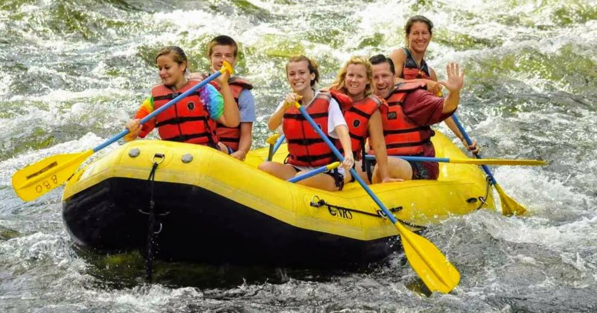
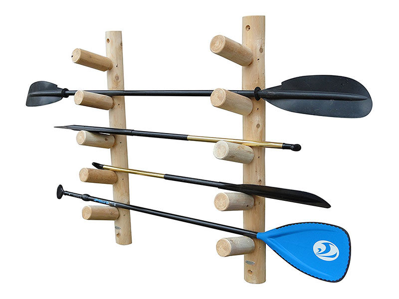
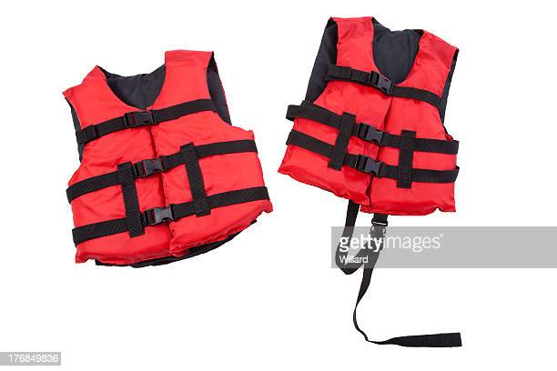

This is the header of first box, box1
This is the main content for first box
This is the header for the second box
This is the paragraph for the second box
This is the header for the third box
This is the paragraph for the third box
This is what you should expect when taking a trip with White Waters!
On the White Waters adventure, You will find out that the many resources we have available are all at YOUR fingertips, We encourage you to use these resources to make your adventure memorable! Stay safe and have fun!
  